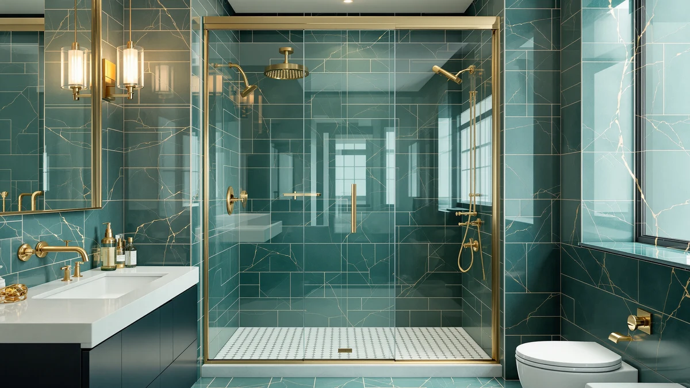

Framed vs Frameless Shower Doors (2026): Which Should You Buy?
Prices and picks verified as of August 2026. Independent, reader-supported reviews.


Things to Know Before You Buy
- Framed doors use a metal perimeter to hold the glass, which keeps the material cost down and the panel structurally stiffer over a wide opening.
- Frameless doors use thicker tempered glass (typically 3/8 to 1/2 inch) with minimal or no metal, so the look is cleaner but the glass and hardware cost more.
- Frame channels collect soap scum and hard water spots faster than exposed glass edges, so framed doors generally need more frequent cleaning.
- Frameless installation is less forgiving of an out-of-square alcove and often needs a professional measure, while many framed kits are sized for DIY installation.
- Both styles come in sliding, pivot, and hinged configurations, so when you're weighing framed vs frameless shower doors, the frame question is separate from the door-opening question.
The framed vs frameless shower doors decision usually comes down to three things: budget, how much upkeep you want, and how your bathroom looks with a visible metal border versus a nearly invisible glass edge. Framed doors cost less, install faster, and hold up well in busy family bathrooms where budget matters more than a showroom look. Frameless doors cost more and take longer to fit correctly, but they read as a permanent upgrade and are easier to keep visually clean because there's no metal channel to trap grime.
We compared both styles across build quality, total cost, and daily use based on manufacturer specs, installer guidance, and verified owner reviews from current shower door listings. Neither style is objectively better. The right pick depends on whether you're renovating on a fixed budget, selling a house soon, or building the bathroom you plan to keep for the next fifteen years.
Quick Answer
For most budget-conscious renovations, a framed door is the better call. It costs less, ships in standard sizes that fit most alcoves without custom glass, and its metal frame tolerates a slightly uneven wall better than frameless glass does. If you're renovating a primary bathroom you plan to keep long-term, or you want the door to look like part of a high-end remodel rather than a hardware-store fixture, frameless is worth the extra cost.
What is Framed?
A framed shower door has an aluminum or metal frame running around the full perimeter of the glass panel, including the top track, side jambs, and often a bottom rail. The frame does the structural work, so the glass itself only needs to be about 1/4 inch thick, which keeps material and manufacturing costs lower than frameless designs. That's the main reason framed doors dominate the budget and mid-range price tiers.
The metal frame also makes framed doors more forgiving to install. Because the track and jambs can hide small gaps and out-of-square walls, a framed kit will often fit an alcove that would require custom glass for a frameless setup. Most big-box framed doors ship as complete kits with the track, rollers or hinges, and glass panel pre-sized, so a handy homeowner can install one in an afternoon without hiring a glazier.
The tradeoff is maintenance and appearance. The frame's channels and corners are where soap scum, mineral deposits, and mildew accumulate fastest, and that buildup is more visible against metal than it is on bare glass. Framed doors also visually break up the shower enclosure with horizontal and vertical metal lines, which can make a small bathroom feel more boxed in. Reviewers consistently note that framed doors need a wipe-down after nearly every shower to keep the tracks looking clean, more often than frameless owners report. It's this maintenance gap that drives most of the framed vs frameless shower doors debate among homeowners comparing the two styles.
What is Frameless Shower Doors?
A frameless shower door uses thick tempered glass, usually 3/8 to 1/2 inch, held in place by minimal hardware: a few clips, hinges, or a slim header bar instead of a full metal perimeter. The glass itself carries the structural load, which is why it has to be so much thicker than the glass in a framed panel. That thickness is also what gives frameless doors their solid, substantial feel when you close them.
Because there's little to no metal touching the glass, frameless doors read as more open and modern, and they let more light pass through the shower area, which reviewers say makes small bathrooms feel larger. There are no channels to trap scum, so cleaning is generally a squeegee and a glass cleaner rather than scrubbing a track. Owners report this is the single biggest quality-of-life difference between the two styles.
Frameless comes with real costs beyond the sticker price. The heavier glass requires sturdier hinges and clips rated for the extra weight, and because there's no frame to disguise a slightly uneven opening, installation usually calls for a precise measure and sometimes custom-cut glass. That precision work is why frameless installation quotes run higher than framed ones, and why DIY frameless installs are less common than DIY framed installs. It's a real cost difference to weigh when you're deciding between framed vs frameless shower doors for your own bathroom.
Head-to-Head: Build Quality & Durability
Framed doors lean on their metal structure for strength, so the glass can stay thin without sacrificing rigidity. That metal is typically aluminum with a powder-coat, chrome, or matte black finish, and according to verified owner reviews, the finish is usually the first thing to show wear: corrosion at screw points, pitting near the base track where standing water collects, and rollers that loosen after a few years of daily sliding. The glass itself rarely fails in a framed door, since the frame absorbs most of the stress.
Frameless doors put all the structural burden on the glass, which is why manufacturers spec thicker tempered panels rated for shower use. Reviewers note that once installed correctly, frameless glass tends to outlast the hinges and clips that hold it, and metal hardware on frameless doors is usually limited to a few contact points rather than an entire track system, so there's simply less metal to corrode. When frameless doors fail, it's almost always a hardware issue, like a hinge working loose, rather than the glass itself.
In the framed vs frameless shower doors durability comparison, frameless wins on long-term structural longevity because there's less hardware to fail, while framed wins on resistance to installation error, since the frame can compensate for minor wall imperfections that would stress frameless glass over time.
Head-to-Head: Price & Value
Framed shower doors typically run $150 to $400 for a standard alcove kit, including track, hardware, and glass. Installation is often a DIY afternoon project, which keeps total project cost low. That combination makes framed the clear choice when you're working with a fixed renovation budget or updating a rental property.
Frameless doors generally run $400 to $900 or more once you account for the thicker glass and sturdier hardware, and professional installation is common because of how precisely the glass has to be measured and hung. When you weigh framed vs frameless shower doors on pure value, framed wins on upfront cost every time, but frameless can offer better long-term value in a home you plan to keep, since it typically shows less wear and rarely needs the hardware replaced within a decade.
Head-to-Head: Use Experience
Day to day, the biggest difference owners report is cleaning. Framed doors have tracks and corners where soap film, hard water spots, and mildew collect, and reviewers say that buildup needs regular attention to avoid a grimy look, especially in the bottom track where standing water sits after every shower. Frameless doors have almost nothing to trap grime beyond the glass surface itself, so a quick squeegee after each use keeps them looking clear for much longer between deep cleans.
Sound and feel differ too. A framed sliding door rattles slightly in its track over time as rollers wear, and owners note that light rattling as a minor but noticeable annoyance. A frameless door, especially a heavier pivot or hinged model, closes with a solid, weighted feel that most reviewers describe as more premium, though the extra glass weight means it needs a firmer push to move.
Visually, framed doors divide the shower space with visible metal lines, while frameless doors blend into the rest of the bathroom, which is why frameless is the more common choice in higher-end remodels where an open, unbroken sightline matters. For a family bathroom that gets heavy daily use and needs to look presentable without constant attention, the tradeoff runs the other way, and framed's lower cost usually outweighs the extra wipe-downs. That day-to-day gap is often the deciding factor once homeowners compare framed vs frameless shower doors in a real bathroom rather than a showroom.
When to Choose Framed
Choose a framed shower door if your renovation has a firm budget and you want to install it yourself over a weekend. Framed kits are sized for standard alcove openings, so they're widely available at home improvement stores and don't usually require a custom glass order. That makes them the practical choice for rental properties, guest bathrooms, or a first-home renovation where you want a finished look without hiring a glazier.
Framed also makes sense if your shower opening isn't perfectly square. The frame's track and jambs can absorb small gaps that would otherwise stress a frameless panel, so you're less likely to run into installation problems on an older home with settled walls. If you're comfortable doing a bit more maintenance in exchange for saving several hundred dollars, framed is the lower-risk side of the framed vs frameless shower doors decision.
When to Choose Frameless Shower Doors
Choose a frameless shower door if you're renovating a bathroom you plan to keep for years and want it to look like a permanent upgrade rather than a hardware-store fixture. The open glass line reads as higher-end in listing photos too, which matters if you're planning to sell within the next several years. Reviewers consistently point to the cleaner look and easier upkeep as the reasons they'd choose frameless again.
Frameless is also the better fit for small bathrooms, since the unbroken glass lets more light through and avoids visually dividing the space with metal lines. Budget for professional installation and a precise measure of your alcove, since frameless glass doesn't forgive an out-of-square opening the way a framed kit does. If cleaning time matters more to you than upfront cost, the squeegee-and-done maintenance routine of frameless is worth the higher price on the frameless side of the framed vs frameless shower doors comparison.
Our Top Picks
Whichever style you land on, these three doors show the range within each option, from a straightforward framed slider to a premium frameless corner enclosure.

Editor's Pick
Shower Door Double Sliding Glass
A 60-inch double-sliding framed door with an aluminum frame and stainless handle, sized for standard alcove openings.
$359.00
Check Price on Amazon
Best Value
VEVOR Shower Enclosure 35 in.
A framed corner enclosure that comes in under $300, a solid entry point if you're testing the framed side of this comparison without a big budget.
$270.99
Check Price on Amazon
Premium Choice
DreamLine French Corner 34 1/2
A satin black framed corner enclosure from DreamLine, built with a heavier frame and finish for a higher-end look at a higher price.
$637.00
Check Price on AmazonFrequently Asked Questions
Is frameless more expensive than framed?
Yes. Frameless doors use thicker, heavier tempered glass and sturdier hardware, which typically pushes the price several hundred dollars above a comparable framed door, and professional installation adds to that gap.
Which is easier to clean, framed or frameless shower doors?
Frameless is easier to keep clean day to day, since there's no metal track or channel to trap soap scum and hard water spots. Framed doors need more regular wiping in the corners and bottom track.
Can I install a frameless shower door myself?
It's possible, but most homeowners hire a professional. Frameless glass has to be measured precisely for the opening and hung with hardware rated for its weight, so small errors are harder to correct than with a framed kit.
Do framed shower doors last as long as frameless ones?
The glass in both styles typically holds up well. Framed doors are more likely to show wear at the metal frame and rollers over time, while frameless doors tend to have less hardware overall, which means fewer parts that can loosen or corrode.
Does a frameless shower door make a small bathroom look bigger?
Reviewers and designers commonly say yes. Because frameless glass has no visible metal border, it lets more light pass through the enclosure and avoids visually dividing the space, which reads as more open in a small bathroom.
Final Verdict
There's no single winner in the framed vs frameless shower doors comparison, only the right fit for your budget and priorities. If you want the lowest upfront cost and an install you can handle yourself, a framed door like the KisaTub double-sliding model above gets the job done without the premium price tag. If you're renovating a bathroom you plan to keep and want a cleaner look with less regular upkeep, frameless is worth the extra investment, and a heavier-built option like DreamLine's French Corner enclosure shows what that upgrade buys you.